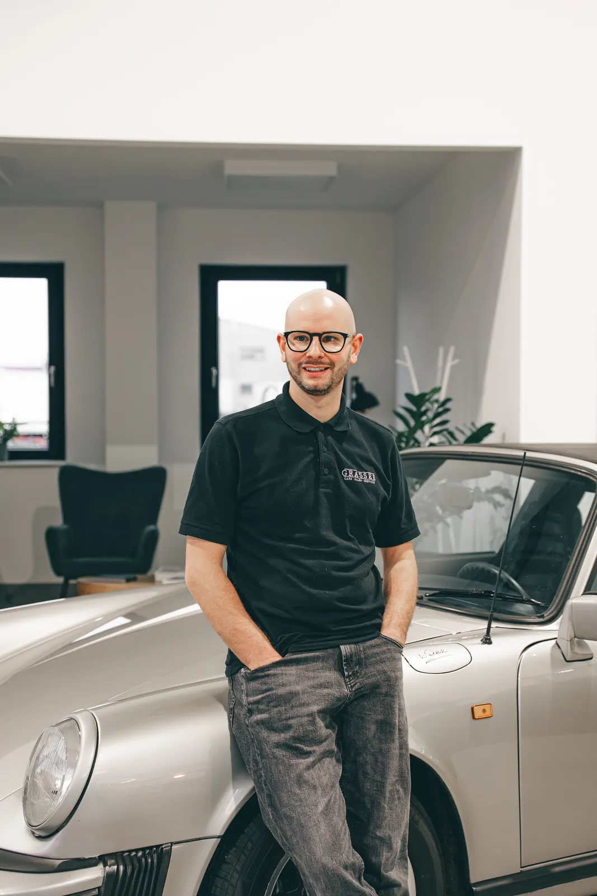

Porsche 911 ab 1963 und späte 356
Die frühen Elfer bis 1973 und die letzten 356: Vergaser oder mechanische Einspritzung, viel Handarbeit, wenig Toleranz. Hier zählen Erfahrung und Geduld mehr als Werkzeug.
Wartung, Instandsetzung und bei Porsche auch die Restauration — für Fahrzeuge ab den 1960er Jahren, vom 911 ab 1963 über G-Modell, 964 und 993 bis zu den Youngtimern von heute.

Ein Oldtimer ist kein altes Auto, das wieder funktionieren soll. Er ist ein Dokument seiner Zeit — und jeder Eingriff verändert es. Deshalb reparieren wir, was sich reparieren lässt, tauschen nur, was getauscht werden muss, und sprechen vorher mit Ihnen darüber.
Ein G-Modell braucht keine Diagnosesoftware, sondern jemanden, der hört, ob das Ventilspiel stimmt, und riecht, ob irgendwo Öl auf den Wärmetauscher tropft. Beides haben wir im Haus.
Durchsicht und ehrliche Einschätzung des Zustands, bevor ein Preis genannt wird.
Originalteile bleiben am Fahrzeug, solange sie ihren Dienst tun.
Gerade bei älteren Fahrzeugen zeigt sich manches erst beim Öffnen. Dann rufen wir an.
Jede Arbeit steht auf der Rechnung mit allen Positionen — Teil der Fahrzeughistorie.
Jede Generation des luftgekühlten 911 hat ihre eigene Technik und ihre eigenen Stellen, an denen man genauer hinsieht. Wir betreuen Fahrzeuge ab den 1960er Jahren — Vorkriegsfahrzeuge gehören nicht zu unserem Angebot.
Die frühen Elfer bis 1973 und die letzten 356: Vergaser oder mechanische Einspritzung, viel Handarbeit, wenig Toleranz. Hier zählen Erfahrung und Geduld mehr als Werkzeug.
911, SC und Carrera 3.2 mit den großen Stoßfängern. Typische Themen sind die Kettenspanner, Ölundichtigkeiten am Motor und die Wärmetauscher der Heizung.
Der erste Elfer mit ABS, Servolenkung und Allradantrieb im Carrera 4. Bei der Wartung achten wir unter anderem auf den Antriebsriemen des Doppelzündverteilers und auf Undichtigkeiten am Zylinderkopf.
Der letzte luftgekühlte 911 und für viele der schönste. Hydraulische Ventilstößel, Mehrlenker-Hinterachse — und ein Sekundärluftsystem, das bei wenig gefahrenen Fahrzeugen gern verkokt.

Der erste wassergekühlte 911, der 996, ist heute ein Youngtimer, und gute Exemplare werden gesucht. Wer einen 996 oder einen frühen 997 erhalten will, sollte die bekannten Schwachstellen dieser Motoren kennen — etwa das Zwischenwellenlager und den Simmerring an der Kurbelwelle. Wir sehen sie bei jeder Wartung mit an.
Neben Porsche betreuen wir auch andere Sportwagen und exklusive Fahrzeuge dieser Jahrgänge, etwa die Mercedes G-Klasse. Für aktuelle Porsche gibt es den Porsche-Service.
Was ein älteres Fahrzeug braucht, hängt vom Zustand ab, nicht von einer Preisliste. Deshalb beginnt jede Arbeit mit einer Durchsicht und einem Angebot.
Nach Werksvorgabe der jeweiligen Baureihe, mit den Betriebsstoffen, für die der Motor gebaut wurde. Bis zum 964 gehört das Einstellen des Ventilspiels dazu.
Bremsen, Fahrwerk, Elektrik, Ölundichtigkeiten und alles, was nach Jahrzehnten nachgibt. Wir sagen Ihnen, was die Substanz gefährdet und was warten kann.
Von der Teilrestaurierung bis zum größeren Projekt. Umfang, Reihenfolge und Budget legen wir gemeinsam fest und stimmen jeden Abschnitt mit Ihnen ab.
Sie haben einen luftgekühlten Elfer oder einen 996 im Blick? Wir sehen ihn uns vor dem Kauf mit Ihnen an. Das kostet weniger als jede Überraschung danach.
Ihr Klassiker muss nicht selbst nach Roßtal fahren. Wir holen ihn ab und bringen ihn zurück.
Die Prüforganisation kommt dreimal pro Woche zu uns. Mängel beheben wir direkt.
Lieber weniger Fahrzeuge zur selben Zeit und jedes richtig.
Fahrzeuge ab den 1960er Jahren, mit Schwerpunkt auf dem luftgekühlten Porsche 911: Urelfer ab 1963, späte 356, G-Modell, 964 und 993. Dazu Youngtimer wie den 996 und 997 sowie andere Sportwagen und exklusive Fahrzeuge dieser Jahrgänge. Vorkriegsfahrzeuge betreuen wir nicht.
Ja, bei Porsche. Umfang, Reihenfolge und Budget legen wir vor Beginn gemeinsam fest, und jeder Abschnitt wird mit Ihnen abgestimmt.
Das hängt von Baureihe, Zustand und Wartungsumfang stärker ab als bei einem aktuellen Fahrzeug. Deshalb sehen wir uns das Fahrzeug zuerst an und nennen Ihnen dann einen verbindlichen Preis, bevor wir anfangen.
Bis einschließlich 964 ja, das gehört zur regulären Wartung. Der 993 hat als erster 911 hydraulische Ventilstößel, dort entfällt die Einstellung.
Modell, Baujahr und was Ihnen am Herzen liegt — ob Wartung, ein Problem oder ein größeres Projekt. Wir melden uns und vereinbaren eine Durchsicht.
Grasser Cars · Sales · ServicesOldtimer-Werkstatt in Bayern, für Kundinnen und Kunden aus Nürnberg, Fürth, Zirndorf, Oberasbach, Cadolzburg, Stein, Schwabach und Ansbach.